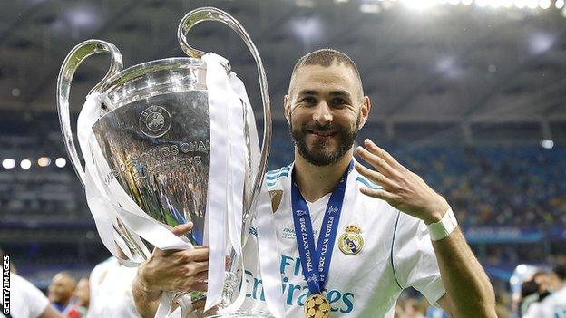
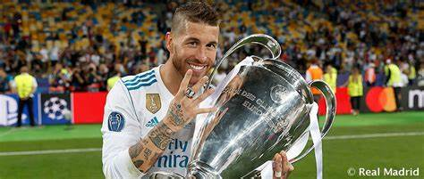
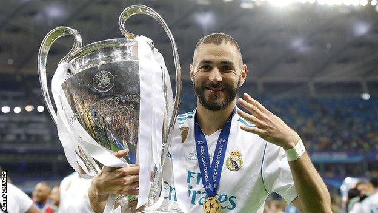
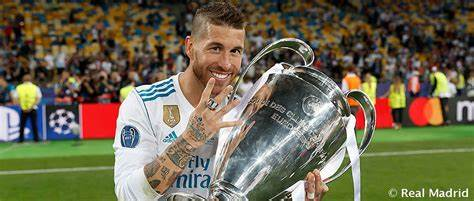

Real Madrid Hattrick Juara UCL 2018

Real Madrid berhasil memenangi gelar Liga Champions 2017/18 setelah mengalahkan Liverpool di babak final dengan skor 3-1, pada Minggu (27/5) dini hari WIB. Tiga gol Madrid dicetak oleh Karim Benzema dan Gareth Bale (2). Sementara satu gol Liverpool dicetak oleh Sadio Mane.Di awal laga, Liverpool justru tampil dominan dengan banyak menekan Real Madrid. Hal buruk terjadi pada Liverpool setelah pemain andalan mereka, Mohamed Salah, mengalami cedera pada bahunya akibat duel dengan Sergio Ramos. Salah digantikan oleh Adam Lallana pada menit ke-29. Pemain asal Mesir itu keluar lapangan sambil menitikkan air mata. Karim Benzema berhasil mencetak gol pada menit ke-50. Penyerang asal Perancis tersebut berhasil memotong bola yang dilemparkan oleh Loris Karius di area kotak penalti Liverpool. Selang lima menit kemudian, Liverpool berhasil menyamakan kedudukan lewat gol yang dicetak oleh Sadio Mane. Real Madrid meresponsnya dengan melakukan pergantian pemain. Gareth Bale masuk menggantikan Isco pada menit ke-61. Tiga menit setelah masuk lapangan, Bale membalikkan keadaan dengan mencetak gol kedua untuk Real Madrid. Berawal dari umpan silang yang dilepaskan Marcelo, pemain bernomor punggung 11 itu menyambarnya dengan sebuah tendangan salto yang langsung menghujam deras ke sudut kanan gawang Liverpool. Real Madrid berhasil memperbesar keunggulan atas Liverpool lewat gol yang dilesakkan Gareth Bale pada menit ke-83. Bale kembali menciptakan gol indah lewat tembakan jarak jauh dari luar kotak penalti. Gol tersebut memastikan gelar ke-13 Real Madrid di Liga Champions, yang tiga di antaranya diraih dalam tiga tahun terakhir. Sampai peluit akhir dibunyikan, Liverpool tak mampu mengejar ketertinggalan mereka dari Real Madrid. Madrid berhasil meraih trofi Liga Champions tiga kali berturut-turut.
 


